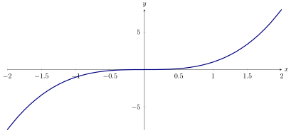
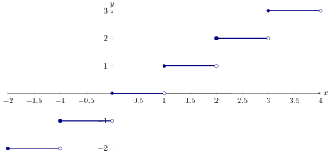
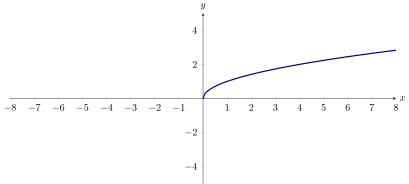
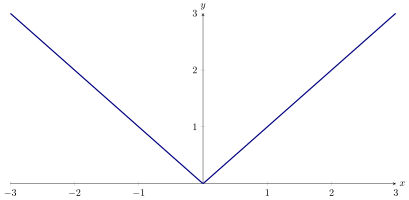
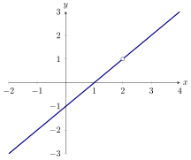
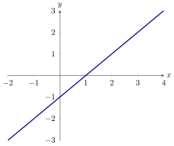

We define the concept of a function.
Life is complex. Part of this complexity stems from the fact that there are many
relationships between seemingly unrelated events. Armed with mathematics, we seek
to understand the world. Perhaps the most relevant “real-world” relation
is
the position of an object with respect to time.
Our observations seem to indicate that every instant in time is associated to a
unique positioning of the objects in the universe. You may have heard the
saying,
you cannot be two places at the same time,
and it is this fact that motivates our definition for functions.
A
function is a relation between sets where for each input, there is exactly one
output.
If our function is the “position with respect to time” of some object, then the input
is
position time none of the above
and the output is
position time none of the above
Something as simple as a dictionary could be thought of as a relation, as it connects
words to definitions. However, a dictionary is not a function, as there are words with
multiple definitions. On the other hand, if each word only had a single definition,
then a dictionary would be a function.
Which of the following are functions?
Mapping words to their definition in
a dictionary. Mapping social security numbers of living people to actual
living people. Mapping people to their birth date. Mapping mothers to their
children.
- Since words may have more than one definition, “relating words to their
definition in a dictionary” is not a function.
- Since every social security number corresponds exactly to one person,
“relating social security numbers of living people to actual living people”
is a function.
- Since every person only has one birth date, “relating people to their birth
date” is a function.
- Since mothers can have more (or less) than one child, “relating mothers
to their children” is not a function.
What we are hoping to convince you is that the following are true:
-
(a)
- The definition of a function is well-grounded in a real context.
-
(b)
- The definition of a function is flexible enough that it can be used to model
a wide range of phenomena.
Whenever we talk about functions, we should explicitly state what type of things the
inputs are and what type of things the outputs are. In calculus, functions often define
a relation from (a subset of) the real numbers (denoted by ) to (a subset of) the real
numbers.
We call the set of the inputs of a function the
domain, and we call the set of the
outputs of a function the
range.
Consider the function that maps from the real numbers to the real numbers by
taking a number and mapping it to its cube:
and so on. This function can be
described by the formula or by the graph shown in
the plot below:

A function is a relation (such that for each input, there is exactly one output)
between sets. The formula and the graph are merely descriptions of this
relation.
- A formula describes the relation using symbols.
- A graph describes the relation using pictures.
The function is the relation itself, and is independent of how it is described.
Our next example may be a function that is new to you. It is the greatest integer
function.
Consider the
greatest integer function. This function maps any real number to
the greatest integer less than or equal to . People sometimes write this as , where
those funny symbols mean exactly the words above describing the function.
For your viewing pleasure, here is a graph of the greatest integer function:

Observe that here we have multiple inputs that give the same output. This is not a
problem! To be a function, we merely need to check that for each input, there is
exactly one output, and this condition is satisfied.
Notice that both the functions described above pass the so-called vertical line
test.
The curve represents as a function of at if and only if the vertical line
intersects the curve at exactly one point. This is called the
vertical line
test.
Sometimes the domain and range are the entire set of real numbers, denoted by . In
our next examples we show that this is not always the case.
Consider the function that maps non-negative real numbers to their positive square
root. This function can be described by the formula The domain is , which we
prefer to write as in interval notation. The range is . Here is a graph of :

To really tease out the difference between a function and its description, let’s
consider an example of a function with two different descriptions.
Explain why .
Although may appear to simplify to just , let’s see what
happens when we plug in some values. In an entirely similar way, we see
that for any positive , . Hence . Rather we see that . The domain of is
and the range is . For your viewing pleasure we’ve included a graph of :

Finally, we will consider a function whose domain is all real numbers except for a
single point.
Are and the same function?
Let’s use a series of steps to think about this question.
First, what if we compare graphs? Here we see a graph of :

On the other hand, here is a graph of :

Second, what if we compare the domains? We cannot evaluate at . This is where is
undefined. On the other hand, there is no value of where we cannot evaluate . In
other words, the domain of is .
Since these two functions do not have the same graph, and they do not have the same
domain, they must not be the same function.
However, if we look at the two functions everywhere except at , we can say that . In
other words, From this example we see that it is critical to consider the domain and
range of a function.